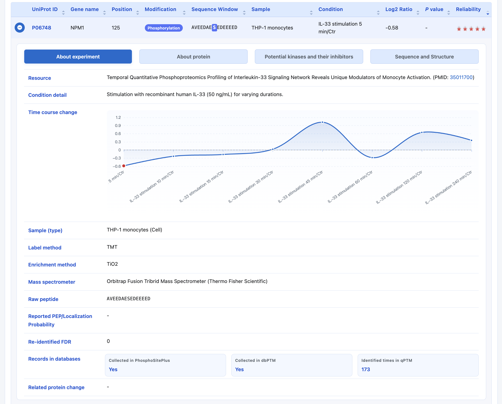
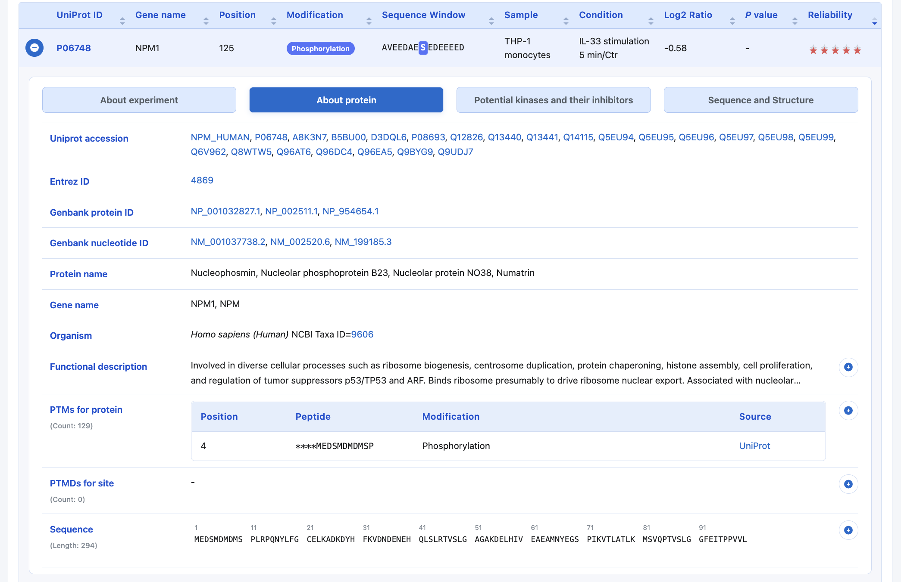
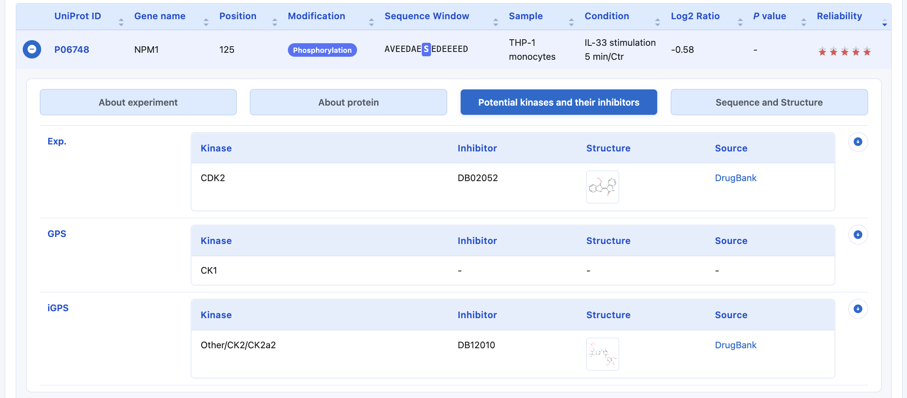
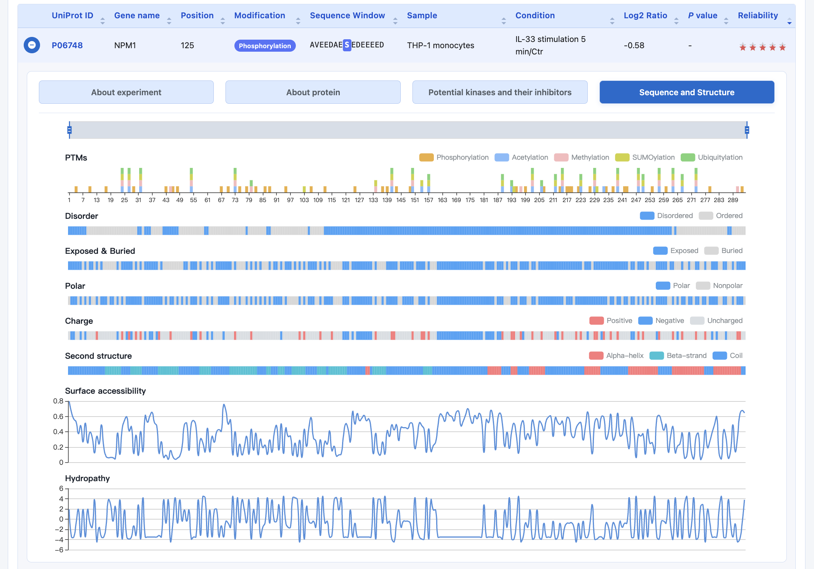

Help
qPTM 3.0 hosts quantitative PTM proteomics data for 6 types of post-translational modifications (acetylation, glycosylation, methylation, phosphorylation, SUMOylation, ubiquitylation) in 4 different organisms (human, mouse, rat, yeast).
In total, 14,183,172 quantification events for 796,337 sites on 73,783 proteins under 3,391 conditions are collected and integrated. The matched proteome datasets were also integrated when available, providing a comprehensive view of PTM regulation.
Comparison between qPTM 3.0 and qPTM 2.0
Compared with the previous release (qPTM 2.0), qPTM 3.0 has substantially expanded the curated data as summarized below.
| Item | qPTM 2.0 | qPTM 3.0 | Increase |
|---|---|---|---|
| Literatures | 636 | 744 | 108 |
| PTM events | 11,482,553 | 14,183,172 | 2,700,619 |
| PTM sites | 660,030 | 796,337 | 136,307 |
| Proteins | 40,728 | 73,783 | 33,055 |
| Conditions | 2,596 | 3,391 | 795 |
Home (Quick Search)
On the home page of qPTM, users can specify one field or all fields to perform a quick search with keyword(s) in the selected field(s). Users can simply click the example and search buttons to perform an example search.

Advanced Search
Users can click the Advanced button to open the advanced search panel, add more keyword boxes, and choose AND, OR, or NOT to perform a more accurate multiple-keyword search. Users can simply click the example and search buttons to perform an example search.

Browse
On the Browse page, users can click one term to search the specified data in qPTM. The data are first grouped by organisms and further grouped by PTM types. Detailed information is organized into three modules—conditions, samples, and genes—which are sorted alphabetically. Users can click an initial letter and select the term of interest.

Results
On the Results page, users can view search or browse results and further filter them using the options provided. More information about the experiment and protein is displayed when users click the button.





Download
qPTM provides two ways to download data. On the Results page, users can click the Download button to export the current search or browse results (including applied filters) as a tab-delimited text file.
The complete qPTM dataset is also available from the Download page. Users should fill in the request form with their name, affiliation, country, and email address, complete the verification, and submit the request. A download link will be sent to the provided email address.

To assess the reliability of PTM sites, we developed a five-star scoring system by integrating raw MS data-based FDR control and the recurrences of identification among datasets.
We performed MS searching using MaxQuant 2.7.5.0 against the UniProt database (Release 2026_01). Default values were used for all parameters unless stated otherwise, including 1% PSM FDR and 1% site-level FDR. The identified PTMs and relevant site-level FDRs were annotated to the curated data as re-identified FDR to enhance the reliability of qPTM.
For datasets without raw MS data, the reliability of PTM sites was assessed through the recurrences of identification among datasets, characterized by three major standards in the five-star scoring system as follows:
- Occurrences in qPTM. We counted the number of times each modified site was identified across all datasets. Because sites were filtered through a cutoff of site-level FDR < 1% according to the literature, the more frequently a site was identified, the more reliable it was considered. Modified sites were given zero points when identified once, one point when identified twice, and so on, with a maximum identified score of 4 for each site.
- Data reliability in the proteomics study. The posterior error probability (PEP) and localization probability of each modified site were curated from the datasets when available. PEP, the probability that an observed PSM is incorrect, was required to be under 1%, and localization probability higher than 75% was considered indicative of high-confidence sites. PTM sites meeting this criterion were given one point.
- Occurrences in other classical PTM databases. Modified sites collected in dbPTM or PhosphoSitePlus were also given one point.
Taken together, the five-star scoring system assigned each PTM site a reliability score of 0–5 bright star(s) according to its recurrences of identification among datasets, and red-bordered the bright star(s) if the site had a site-level FDR < 0.01 according to raw MS data-based re-identification.
Summary of curated datasets
| PMID | Number of events | Number of unique sites | Number of unique proteins |
|---|---|---|---|
| Loading... | |||
Summary of curated literatures
| PMID | Sample | PTMs | Quantification method | Condition | Enrichment method | Mass Spec |
|---|---|---|---|---|---|---|
| Loading... | ||||||
This study was performed by Jiamin Hu, Jun Wu, Dong Zhang, Yijin Wu and Ze-Xian Liu.
Jiamin Hu, Jun Wu, Dong Zhang, Yijin Wu and Ze-Xian Liu are from
Sun Yat-sen University Cancer Center,
Building 2#, 651 Dongfeng East Road,
Guangzhou 510060, P. R. China
For questions or suggestions, please contact:
Dr. Ze-Xian Liu
Sun Yat-sen University Cancer Center
Email: liuzx AT sysucc.org.cn